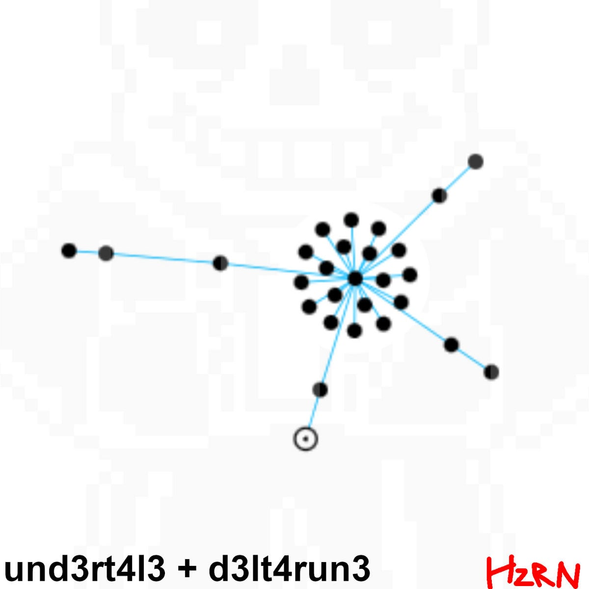

und3rt4l3 + d3lt4run3
3 November 2024
This was my favourite album of mine for a long while. I still do feel like this is my first "great" album, though I will try to avoid quality comments in these in the future [future Hzrn comment: yeah, right!]. But yeah I was so proud of this one. It feels very full in a way I'd never felt before. There's not much to say about this one, really! The story of how it came to be isn't that crazy, it's pretty much just a sequel to m1n3cr4ft. Oh, the cover art. Well I couldn't think of one until a few hours before drop! So I scrambled through my phone, took an image I found cool, and made a cover out of it. Betcha couldn't tell ;;)

- und3rt4l3 (intro)
- Getting Closer
- Shop Breathing
- Antidote Travis Scott
- Megalovania
- I Dont Know I Really Dont
- Mash-a-ton - SuperSpeedRaven
- Fingers
- und3rt4l3 (reprise)
- d3lt4run3 (carti)
- In Love With the Machine
- Ready for Action
- Baby Girl He's
- It's Pronounced "Jewels" - SuperSpeedRaven
- A Great Checker
- boob pics online
- Nondora Nolace
- Hip Hop
- Big Shot Like Us
- d3lt4run3 (outro)